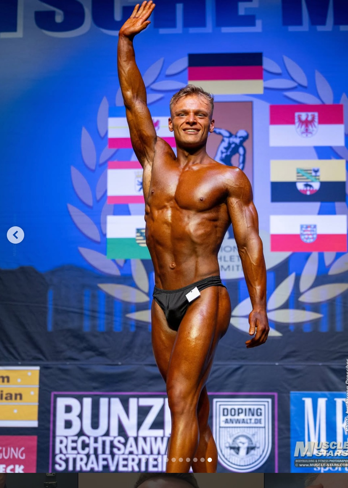

Tipps sind vorhanden, aber nicht zu einem passenden System verbunden.
Online-Coaching · Training · Alltag
Mehr Struktur.
Mehr Fortschritt.
Ein Plan, der zu deinem Alltag passt.
Individuelles Coaching für Training, Ernährung und Routinen – klar, persönlich und langfristig umsetzbar.
Individuelle PlanungPersönliche BegleitungNachvollziehbare Anpassung
Kommt dir das bekannt vor?
Du trainierst – aber ein klarer roter Faden fehlt.
Pläne passen nicht zu deinem Alltag, Fortschritt ist schwer einzuordnen und bei jeder Unsicherheit beginnt die Suche von vorn. Genau dort setzt das Coaching an.
Ohne Einordnung bleibt unklar, was funktioniert und was angepasst werden sollte.
Ein guter Plan muss zu Zeit, Erfahrung und Lebenssituation passen.
Das Coaching
Kein Plan von der Stange.
Ein System für deinen Weg.
Training, Ernährung und Routinen werden als zusammenhängendes System betrachtet. Du erhältst Orientierung, eine verständliche Planung und persönliche Rückmeldung.
Training
Strukturierter Trainingsaufbau, abgestimmt auf Leistungsstand, Ziel, Trainingsort und verfügbare Zeit.
Ernährung & Routinen
Alltagstaugliche Grundstrukturen, die persönliche Vorlieben und eine langfristige Umsetzung berücksichtigen.
Begleitung
Regelmäßige Rückmeldung, gemeinsame Auswertung und Anpassungen nach transparenten Kriterien.
Ernährung im Coaching
Einfacher essen.
Sinnvoll trainieren.
Eine gute Ernährungsstruktur muss zu Training, Ziel und Alltag passen. Julian unterstützt dich dabei, Mahlzeiten verständlich zu planen und verlässliche Routinen zu entwickeln – ohne extreme Diäten und unnötige Verbote.
Das Coaching umfasst allgemeine sportbezogene Ernährungsorientierung, aber keine medizinische Ernährungsberatung oder Therapie.
Training & Mahlzeiten
Mahlzeiten passend zu Trainingszeiten und Tagesablauf strukturieren.
Grundversorgung
Energie, Eiweiß, Flüssigkeit und regelmäßige Mahlzeiten im Blick behalten.
Umsetzung im Alltag
Lebensmittel und Routinen wählen, die langfristig wirklich umsetzbar sind.
Grundsatz: Nahrungsergänzungsmittel sind kein Ersatz für eine ausgewogene Ernährung und keine Voraussetzung für den Erfolg im Coaching.
So funktioniert es
Vom ersten Gespräch zum klaren Plan.
Ein nachvollziehbarer Ablauf schafft Verbindlichkeit – ohne unrealistische Versprechen.
Kennenlernen
Wir klären, wo du stehst, was du erreichen möchtest und welche Rahmenbedingungen dein Alltag mitbringt.
Plan entwickeln
Training, Ernährung und Routinen werden verständlich strukturiert und auf deine Möglichkeiten abgestimmt.
Umsetzen
Du setzt die vereinbarten Schritte eigenverantwortlich um und erhältst klare Orientierung für deinen Trainingsalltag.
Auswerten & anpassen
Rückmeldungen und nachvollziehbare Kriterien zeigen, wo Anpassungen sinnvoll sind.
Über Julian
Planung, Technik und Konstanz statt kurzfristiger Lösungen.
Julian steht für einen strukturierten und persönlichen Ansatz. Seine eigene sportliche Erfahrung prägt seine Haltung: Fortschritt entsteht nicht durch einzelne heroische Aktionen, sondern durch klare Schritte, ehrliche Rückmeldung und kontinuierliche Arbeit.
Seine Ausbildung zum Fitnesstrainer beginnt im Oktober 2026. Dieser Status wird transparent dargestellt; eine abgeschlossene Qualifikation wird nicht vorweggenommen.
„Ich möchte dir nicht einfach einen Plan schicken. Ich möchte dir helfen, deinen Weg zu verstehen und verlässlich umzusetzen.“

Sportlicher Weg
Fortschritt entsteht lange bevor man ihn sieht.
Sportliche Erfolge 20262. Platz · Deutsche Meisterschaft · Junioren-Bodybuilding2. Platz · Ostdeutsche Meisterschaft · Junioren-Bodybuilding
Der Moment auf der Bühne ist nur das sichtbare Ergebnis. Dahinter liegen Monate konsequenter Vorbereitung, klare Entscheidungen und die Bereitschaft, den eigenen Weg immer wieder ehrlich zu überprüfen.
Julian kennt diesen Prozess aus eigener Erfahrung. Er weiß, dass nachhaltige Entwicklung nicht durch einzelne extreme Maßnahmen entsteht, sondern durch einen Plan, saubere Technik und verlässliche Routinen.
Diese Haltung prägt auch sein Coaching: realistisch planen, konzentriert umsetzen und sinnvoll anpassen – Schritt für Schritt und passend zum eigenen Alltag.
Das Ziel ist nicht, Julians Weg zu kopieren. Das Ziel ist, deinen eigenen Weg mit mehr Klarheit und Struktur zu gehen.
Leistungen & Preise
Zwei Wege.
Eine klare Haltung.
Anfänger und Fortgeschrittene werden getrennt begleitet. Beide Programme sind individuell aufgebaut und haben eine feste Vertragslaufzeit von drei Monaten.
FoundationAnfänger & Wiedereinsteiger
199 €pro Monat
Ein strukturierter Einstieg für 0 bis etwa 2 Jahre Trainingserfahrung.
- Persönliche Eingangsanalyse
- Individueller Trainingsplan und Ernährungs-Grundstruktur
- 1 persönlicher Video-Call pro Monat · 45 Minuten
- Monatliche Auswertung und Anpassung
- WhatsApp jederzeit · Antwort in der Regel innerhalb von 24 Stunden
- Fokus auf Technik, Routinen und Konstanz
EliteFortgeschrittene
329 €pro Monat
Präzise Begleitung für erfahrene Trainierende mit konkreten Zielen oder Leistungsplateau.
- Detaillierte Trainings- und Leistungsanalyse
- Individuelle Phasen- und Progressionsplanung
- 2 persönliche Video-Calls pro Monat · je 45 Minuten
- Monatliche Analyse und laufende Feinsteuerung
- WhatsApp jederzeit · Antwort in der Regel innerhalb von 24 Stunden
- Videoanalyse von Technik und Übungsausführung
Während Ausbildungszeiten, Prüfungen, Krankheit sowie an Sonn- und Feiertagen kann die Antwort bis zu zwei Werktage dauern. Keine Sofort-, Notfall- oder 24/7-Live-Betreuung.
Alle angegebenen Preise sind monatliche Gesamtpreise. Die Vertragslaufzeit beträgt drei Monate; die Zahlung erfolgt monatlich im Voraus. Der Vertrag endet anschließend automatisch. Eine Fortsetzung erfolgt nur nach ausdrücklicher neuer Vereinbarung. Das gesetzliche Widerrufsrecht bleibt unberührt.
Häufige Fragen
Klarheit vor dem ersten Gespräch.
Für wen ist das Coaching geeignet?
Für Anfänger, Wiedereinsteiger, Berufstätige und Fortgeschrittene, die Training und Alltag strukturierter verbinden möchten.
Wie beginnt die Zusammenarbeit?
Mit einer unverbindlichen Anfrage und einem kostenlosen Erstgespräch. Danach wird gemeinsam geprüft, ob das Angebot passt.
Bekomme ich einen Standardplan?
Nein. Die Planung orientiert sich an Trainingsstand, Ziel, verfügbarer Zeit, Trainingsort und persönlichen Rahmenbedingungen.
Ersetzt das Coaching eine medizinische Beratung?
Nein. Das Coaching ist keine medizinische, therapeutische oder heilkundliche Behandlung und ersetzt keine entsprechende Fachberatung.
Werbepartnerschaft
Partner & Transparenz
Julian ist Werbepartner von ESN.
Wenn du später über Julians Rabattcode bei ESN bestellst, erhält Julian eine Provision. Der Kauf von ESN-Produkten ist freiwillig und keine Voraussetzung für das Coaching.
Nahrungsergänzungsmittel ersetzen weder eine ausgewogene Ernährung noch medizinische Beratung. Produkthinweise werden klar als Werbung gekennzeichnet und von den Coachingempfehlungen getrennt.
Der offizielle Rabattcode beziehungsweise Affiliate-Link wird erst nach abschließender Freigabe ergänzt.Erstgespräch
Lass uns gemeinsam prüfen, ob das Coaching zu dir passt.
Schreib kurz, wo du stehst und was du verändern möchtest. Das Erstgespräch ist unverbindlich.
✓ Persönliches Kennenlernen✓ Klärung deiner Ausgangslage✓ Keine automatische Buchung
Alternativ über WhatsApp anfragen